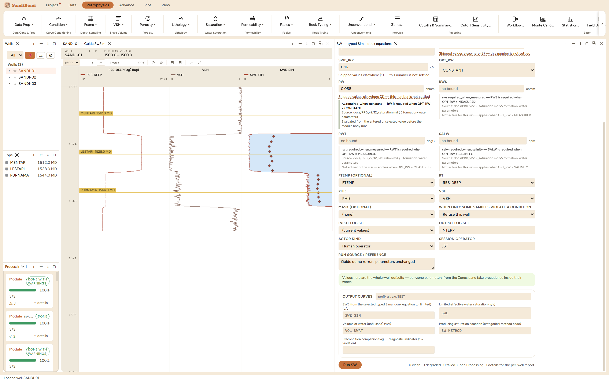

The Simandoux family: the other classic shaly-sand saturation, with the shale conductivity added as a simple parallel term rather than Indonesia's interfering square-root form. It matters for one reason above its physics: the name is ambiguous across the industry. What one vendor calls "Simandoux" is another vendor's "modified Simandoux", and the two equations give different answers on the same rock. This application therefore ships them as typed identities, each carrying its own citation, so a methodology table can say exactly which equation ran.
simandoux_bardon_pied: 1/RT = PHIE^M·SWE^N/(A·Rw) + VSH·SWE/RT_SH simandoux_modified_slb: 1/RT = PHIE^M·SWE^N/(A·Rw·(1−VSH)) + VSH^C·SWE/RT_SH
The first is the Bardon and Pied (1969) form of Simandoux (1963); the second divides the sand term by (1 − VSH) and raises VSH to a chosen exponent C. Legacy vendor tokens are accepted only as input aliases; what persists in provenance is the typed id, because the same adjective names the other equation in other software.
0 clean · 3 degraded (94 to 97 samples per well clamped at the 0.16 floor, as the other resistivity methods). Median SWE_SIM 0.7008; gas sand 0.0881, wet sand 0.8078. Paired against Indonesia on identical picks the Bardon-Pied form reads +0.0228 (median, sample-paired): two saturation units wetter, because its plain parallel term hands the shale slightly less of the measured conductivity than Indonesia's cross term does.
SELECT round(median(a.value - b.value), 4) FROM computed_curves a JOIN computed_curves b ON a.well_id = b.well_id AND a.depth = b.depth AND b.curve_name = 'SWE_INDO' WHERE a.curve_name = 'SWE_SIM' AND NOT isnan(a.value) AND NOT isnan(b.value)
And the identity dial: switching to simandoux_modified_slb on the same picks drops the median from 0.7008 to 0.6276. Seven saturation units between two equations that are both called Simandoux somewhere: that is the whole argument for typed ids, measured. Restored to the Bardon-Pied form, every number returns exactly.
